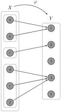
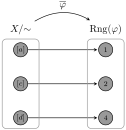
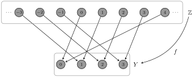

We now turn our attention to some important properties that a function may or may not possess. Recall that if \(f\) is a function, then every element in its domain is mapped to a unique element in the range. However, there are no restrictions on whether more than one element of the domain is mapped to the same element in the range. If each element in the range has a unique element in the domain mapping to it, then we say that the function is injective. Moreover, the range of a function is not required to be all of the codomain. If every element of the codomain has at least one element in the domain that maps to it, then we say that the function is surjective. Let’s make these definitions a bit more precise.
Definition8.27.
Let \(f:X\to Y\) be a function.
The function \(f\) is said to be injective (or one-to-one) if for all \(y\in \range(f)\text{,}\) there is a unique \(x\in X\) such that \(y=f(x)\text{.}\)
The function \(f\) is said to be surjective (or onto) if for all \(y\in Y\text{,}\) there exists \(x\in X\) such that \(y=f(x)\text{.}\)
If \(f\) is both injective and surjective, we say that \(f\) is bijective.
Problem8.28.
Compare and contrast the following statements. Do they mean the same thing?
For all \(x\in X\text{,}\) there exists a unique \(y\in Y\) such that \(f(x)=y\text{.}\)
For all \(y\in \range(f)\text{,}\) there is a unique \(x\in X\) such that \(y=f(x)\text{.}\)
Problem8.29.
Assume that \(X\) and \(Y\) are finite sets. Provide an example of each of the following. You may draw a function diagram, write down a list of ordered pairs, or write a formula as long as the domain and codomain are clear.
A function \(f:X\to Y\) that is injective but not surjective.
A function \(f:X\to Y\) that is surjective but not injective.
A function \(f:X\to Y\) that is a bijection.
A function \(f:X\to Y\) that is neither injective nor surjective.
Problem8.30.
Provide an example of each of the following. You may either draw a graph or write down a formula. Make sure you have the correct domain.
A function \(f:\mathbb{R}\to \mathbb{R}\) that is injective but not surjective.
A function \(f:\mathbb{R}\to \mathbb{R}\) that is surjective but not injective.
A function \(f:\mathbb{R}\to \mathbb{R}\) that is a bijection.
A function \(f:\mathbb{R}\to \mathbb{R}\) that is neither injective nor surjective.
A function \(f:\mathbb{N}\times\mathbb{N}\to \mathbb{N}\) that is injective.
Problem8.31.
Suppose \(X\subseteq \mathbb{R}\) and \(f:X\to \mathbb{R}\) is a function. Fill in the blank with the appropriate word.
The function \(f:X\to \mathbb{R}\) is if and only if every horizontal line hits the graph of \(f\)at most once.
This statement is often called the horizontal line test. Explain why the horizontal line test is true.
Problem8.32.
Suppose \(X\subseteq \mathbb{R}\) and \(f:X\to \mathbb{R}\) is a function. Fill in the blank with the appropriate word.
The function \(f:X\to \mathbb{R}\) is if and only if every horizontal line hits the graph of \(f\)at least once.
Explain why this statement is true.
Problem8.33.
Suppose \(X\subseteq \mathbb{R}\) and \(f:X\to \mathbb{R}\) is a function. Fill in the blank with the appropriate word.
The function \(f:X\to \mathbb{R}\) is if and only if every horizontal line hits the graph of \(f\)exactly once.
Explain why this statement is true.
How do we prove that a function \(f\) is injective? We would need to show that every element in the range has a unique element from the domain that maps to it. First, notice that each element in the range can be written as \(f(x)\) for at least one \(x\) in the domain. To argue that each such element in domain is unique, we can suppose \(f(x_{1})=f(x_{2})\) for arbitrary \(x_1\) and \(x_2\) in the domain and then work to show that \(x_{1}=x_{2}\text{.}\) It is important to point out that when we suppose \(f(x_{1})=f(x_{2})\) for some \(x_1\) and \(x_2\text{,}\) we are not assuming that \(x_1\) and \(x_2\) are different. In general, when we write “Let \(x_1,x_2\in X\)…”, we are leaving open the possibility that \(x_1\) and \(x_2\) are actually the same element. One could approach proving that a function is injective by utilizing a proof by contradiction, but this is not usually necessary.
Skeleton Proof8.34.Proof that a function is injective.
Here is the general structure for proving that a function is injective..
Proof.
Assume \(f:X\to Y\) is a function defined by (or satisfying)… [Use the given definition (or describe the given property) of \(f\)]. Let \(x_1,x_2\in X\) and suppose \(f(x_1)=f(x_2)\text{.}\)\(\ldots\)[Use the definition (or property) of \(f\) to verify that \(x_1=x_2\)]\(\ldots\) Therefore, the function \(f\) is injective.
How do we prove that a function \(f\) is surjective? We would need to argue that every element in the codomain is also in the range. Sometimes, the proof that a particular function is surjective is extremely short, so do not second guess yourself if you find yourself in this situation.
Skeleton Proof8.35.Proof that a function is surjective.
Here is the general structure for proving that a function is surjective.
Proof.
Assume \(f:X\to Y\) is a function defined by (or satisfying)…[Use the given definition (or describe the given property) of \(f\)]. Let \(y\in Y\text{.}\)\(\ldots\)[Use the definition (or property) \(f\) to find some \(x\in X\) such that \(f(x)=y\)]\(\ldots\) Therefore, the function \(f\) is surjective.
Problem8.36.
Determine whether each of the following functions is injective, surjective, both, or neither. In each case, you should provide a proof or a counterexample as appropriate. Note: You are probably not in a position to write a careful argument for surjectivity for Part d.
Define \(f:\mathbb{R}\to \mathbb{R}\) via \(f(x)=x^{2}\)
Define \(g:\mathbb{R}\to [0,\infty)\) via \(g(x)=x^{2}\)
Define \(h:\mathbb{R}\to \mathbb{R}\) via \(h(x)=x^{3}\)
Define \(k:\mathbb{R}\to \mathbb{R}\) via \(k(x)=x^{3}-x\)
Define \(c: \mathbb{R}\times \mathbb{R}\to \mathbb{R}\) via \(c(x,y)=x^{2}+y^{2}\)
Define \(f:\mathbb{N}\to \mathbb{N}\times \mathbb{N}\) via \(f(n)=(n,n)\)
Define \(g:\mathbb{Z}\to \mathbb{Z}\) via
\begin{equation*}
g(n)=\begin{cases}\frac{n}{2}, \amp \text{ if } n\text{ is even } \\ \frac{n+1}{2}, \amp \text{ if } n\text{ is odd } \end{cases}
\end{equation*}
Define \(\ell:\mathbb{Z}\to \mathbb{N}\) via
\begin{equation*}
\ell(n)=\begin{cases}2n+1, \amp \text{ if } n\geq 0\\ -2n, \amp \text{ if } n\lt 0 \end{cases}
\end{equation*}
Suppose \(X\) and \(Y\) are nonempty sets with \(m\) and \(n\) elements, respectively, where \(m\leq n\text{.}\) How many injections are there from \(X\) to \(Y\text{?}\)
Problem8.38.
Compare and contrast the definition of “function” with the definition of “injective function”. Consider the vertical line test and horizontal line test in your discussion. Moreover, attempt to capture what it means for a relation to not be a function and for a function to not be an injection by drawing portions of a digraph.
The next two theorems should not come as as surprise.
Theorem8.39.
The inclusion map \(\iota:X\to Y\) for \(X\subseteq Y\) is an injection.
Theorem8.40.
The identity function \(i_X:X\to X\) is a bijection.
Problem8.41.
Let \(A\) and \(B\) be nonempty sets and let \(S\) be a nonempty subset of \(A\times B\text{.}\) Define \(\pi_{1}:S\to A\) and \(\pi_{2}:S\to B\) via \(\pi_{1}(a,b)=a\) and \(\pi_{2}(a,b)=b\text{.}\) We call \(\pi_{1}\) and \(\pi_{2}\) the projections of \(S\) onto \(A\) and \(B\text{,}\) respectively.
Provide examples to show that \(\pi_{1}\) does not need to be injective nor surjective.
Suppose that \(S\) is also a function. Is \(\pi_{1}\) injective? Is \(\pi_{1}\) surjective? How about \(\pi_{2}\text{?}\)
The next theorem says that if we have an equivalence relation on a nonempty set, the mapping that assigns each element to its respective equivalence class is a surjective function.
Theorem8.42.
If \(\sim\) is an equivalence relation on a nonempty set \(A\text{,}\) then the function \(f:A\to A/\mathord\sim\) defined via \(f(x)=[x]\) is a surjection.
The function from the previous theorem is sometimes called the canonical projection map induced by \(\sim\text{.}\)
Problem8.43.
Under what circumstances would the function from the previous theorem also be injective?
Let’s explore whether we can weaken the hypotheses of Theorem 8.42.
Problem8.44.
Let \(R\) be a relation on a nonempty set \(A\text{.}\)
What conditions on \(R\) must hold in order for \(f:A\to \Rel(R)\) defined via \(f(a)=\rel(a)\) to be a function?
What additional conditions, if any, must hold on \(R\) in order for \(f\) to be a surjective function?
Given any function, we can define an equivalence relation on its domain, where the equivalence classes correspond to the elements that map to the same element of the range.
Theorem8.45.
Let \(f:X\to Y\) be a function and define \(\sim\) on \(X\) via \(a\sim b\) if \(f(a) = f(b)\text{.}\) Then \(\sim\) is an equivalence relation on \(X\text{.}\)
It follows immediately from Theorem 7.62 that the equivalence classes induced by the equivalence relation in Theorem 8.45 partition the domain of a function.
Problem8.46.
For each of the following, identify the equivalence classes induced by the relation from Theorem 8.45 for the given function.
The function \(c\) defined in Problem 8.36Item e. Can you describe the equivalence classes geometrically?
If \(f\) is a function, the equivalence relation in Theorem 8.45 allows us to construct a bijective function whose domain is the set of equivalence classes and whose codomain coincides with the range of \(f\text{.}\) This is an important idea that manifests itself in many areas of mathematics. One such instance is the First Isomorphism Theorem for Groups, which is a fundamental theorem in a branch of mathematics called group theory. When proving the following theorem, the first thing you should do is verify that the description for \(\overline{f}\) is well defined.
Theorem8.47.
Let \(f:X\to Y\) be a function and define \(\sim\) on \(X\) as in Theorem 8.45. Then the function \(\overline{f}:X/\mathord\sim\to \range(f)\) defined via \(\overline{f}([a]) = f(a)\) is a bijection.
Here is an analogy for helping understand the content of Theorem 8.47. Suppose we have a collection airplanes filled with passengers and a collection of potential destination cities such that at most one airplane may land at each city. The function \(f\) indicates which city each passenger lands at while the function \(\overline{f}\) indicates which city each airplane lands at. Moreover, the codomain for the function \(\overline{f}\) consists only of the cities that an airplane lands at.
Example8.48.
Let \(X=\{a,b,c,d,e,f\}\) and \(Y=\{1,2,3,4,5\}\) and define \(\varphi:X\to Y\) via
The function diagram for \(\varphi\) is given in Figure 8.49.(a), where we have highlighted the elements of the domain that map to the same element in the range by enclosing them in additional boxes. We see that \(\range(\varphi)=\{1,2,4\}\text{.}\) The function diagram for the induced map \(\overline{\varphi}\) that is depicted in Figure 8.49.(b) makes it clear that \(\overline{\varphi}\) is a bijection. Note that since \(\varphi(a)=\varphi(b)\) and \(\varphi(d)=\varphi(e)=\varphi(f)\text{,}\) it must be the case that \([a]=[b]\) and \([d]=[e]=[f]\) according to Theorem 7.45. Thus, the vertices labeled as \([a]\) and \([d]\) in Figure 8.49.(b) could have also been labeled as \([b]\) and \([c]\) or \([d]\text{,}\) respectively. In terms of our passengers and airplanes analogy, \(X=\{a,b,c,d,e,f\}\) is the set of passengers, \(Y=\{1,2,3,4,5\}\) is the set of potential destination cities, \(X/\mathord\sim=\{[a],[c],[d]\}\) is the set of airplanes, and \(\range(\varphi)=\{1,2,4\}\) is the set of cities that airplanes land at. The equivalence class \([a]\) is the airplane containing the passenger \(a\text{,}\) and since \(a\) and \(b\) are on the same plane, \([b]\) is also the plane containing the passenger \(a\text{.}\)
(a)
(b)
Figure8.49.Example of a visual representation of Theorem 8.47.
Problem8.50.
Consider the equivalence classes you identified in Parts (a) and (b) of Problem 8.46.
Draw the function diagram for the function \(\overline{f}\) as defined in Theorem 8.47, where \(f\) is the function defined in Example 8.2.
Geometrically describe the function \(\overline{c}\) as defined in Theorem 8.47, where \(c\) is the function defined in Problem 8.36Item e.
While perhaps not surprising, Problem 8.50Item b tells us that there is a one-to-one correspondence between circles centered at the origin and real numbers.
Problem8.51.
Let \(Y=\{0,1,2,3\}\) and define the function \(f:\mathbb{Z}\to Y\) such that \(f(n)\) equals the unique remainder obtained after dividing \(n\) by 4. For example, \(f(11)=3\) since \(11=4\cdot 2+3\) according to the Division Algorithm (Theorem 6.7). This function is sometimes written as \(f(n)=n \pmod{4}\text{,}\) where it is understood that we restrict the output to \(\{0,1,2,3\}\text{.}\) It is clear that \(f\) is surjective since 0, 1, 2, and 3 are mapped to 0, 1, 2, and 3, respectively. Figure 8.52 depicts a portion of the function diagram for \(f\text{,}\) where we have drawn the diagram from the top down instead of left to right.
Describe the equivalence classes induced by the relation given in Theorem 8.45.
What familiar set is \(\mathbb{Z}/\mathord\sim\) equal to?
Draw the function diagram for the function \(\overline{f}\) as defined in Theorem 8.47.
The function diagram in Figure 8.52 is a bit hard to interpret due to the ordering of the elements in the domain. Can you find a better way to lay out the vertices in the domain that makes the function \(f\) easier to interpret?

Figure8.52.Function diagram for the function described in Problem 8.51.
Identify the equivalence classes induced by the relation given in Theorem 8.45.
Draw the function diagram for the function \(\overline{h}\) as defined in Theorem 8.47.
It is not the critic who counts; not the man who points out how the strong man stumbles, or where the doer of deeds could have done them better. The credit belongs to the man who is actually in the arena, whose face is marred by dust and sweat and blood; who strives valiantly; who errs, who comes short again and again, because there is no effort without error and shortcoming; but who does actually strive to do the deeds; who knows great enthusiasms, the great devotions; who spends himself in a worthy cause; who at the best knows in the end the triumph of high achievement, and who at the worst, if he fails, at least fails while daring greatly, so that his place shall never be with those cold and timid souls who neither know victory nor defeat.